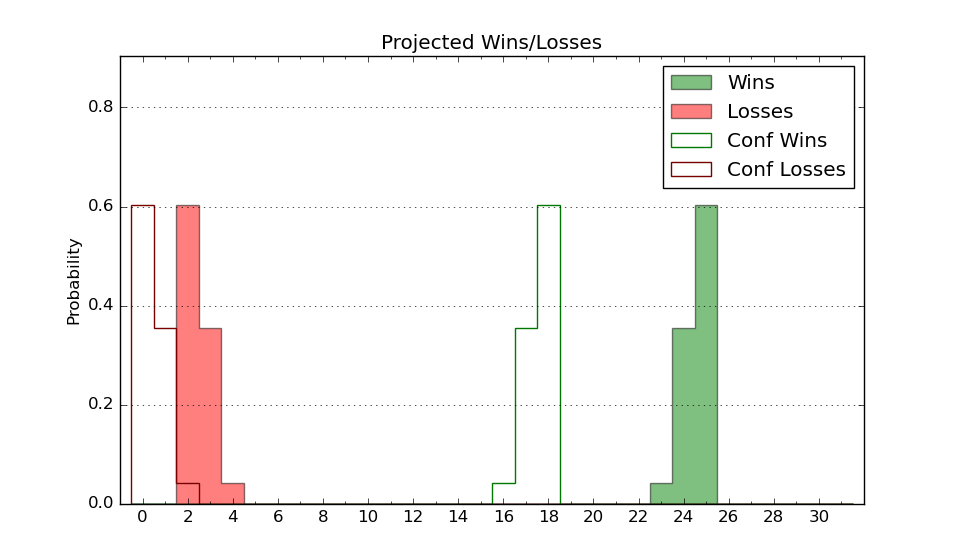

| Home | Game Probabilities | Conferences | Preseason Predictions | Odds Charts | NCAA Tournament |
| City: | Murray, Kentucky | |
| Conference: | Ohio Valley (1st)
| |
| Record: | 16-0 (Conf) 23-2 (Overall) | |
| Ratings: | Comp.: 16.6 (39th) Net: 16.7 (38th) Off: 111.7 (42nd) Def: 94.9 (53rd) SoR: 90.2 (15th) |
| Remaining | ||||||
|---|---|---|---|---|---|---|
| Date | Opponent | Win Prob | Pred. | |||
| 2/24 | Belmont (61) | 71.2% | W 75-69 | |||
| 2/26 | @ Southeast Missouri St. (260) | 86.7% | W 84-71 | |||
| Previous | Game Score | |||||
| Date | Opponent | Win Prob | Result | Off | Def | Net |
| 11/13 | Bellarmine (192) | 92.1% | W 78-59 | -2.7 | 4.8 | 2.1 |
| 11/16 | @Illinois St. (187) | 76.2% | W 77-65 | -1.7 | 5.4 | 3.8 |
| 11/22 | (N) East Tennessee St. (174) | 84.3% | L 58-66 | -30.1 | -1.9 | -32.1 |
| 11/23 | (N) Long Beach St. (165) | 83.8% | W 80-43 | 3.7 | 30.1 | 33.8 |
| 11/24 | (N) James Madison (210) | 87.7% | W 74-62 | -6.1 | 1.6 | -4.5 |
| 12/4 | Middle Tennessee (116) | 84.7% | W 93-87 | 7.5 | -14.2 | -6.8 |
| 12/10 | @Memphis (36) | 34.2% | W 74-72 | 11.1 | -6.0 | 5.1 |
| 12/18 | Chattanooga (74) | 74.3% | W 87-76 | 8.9 | -8.5 | 0.4 |
| 12/22 | @Auburn (12) | 17.1% | L 58-71 | -11.8 | 7.6 | -4.2 |
| 12/30 | Southeast Missouri St. (260) | 95.7% | W 106-81 | 5.1 | -11.0 | -5.9 |
| 1/8 | @SIU Edwardsville (278) | 88.4% | W 74-69 | 6.9 | -17.2 | -10.3 |
| 1/13 | Tennessee St. (298) | 96.9% | W 67-44 | -19.7 | 21.4 | 1.8 |
| 1/15 | @Belmont (61) | 42.1% | W 82-60 | 23.0 | 14.3 | 37.3 |
| 1/17 | @Eastern Illinois (354) | 97.6% | W 72-46 | -1.2 | 4.5 | 3.3 |
| 1/20 | Eastern Illinois (354) | 99.3% | W 91-51 | 20.6 | -9.3 | 11.3 |
| 1/22 | Tennessee Martin (305) | 97.1% | W 74-66 | -14.8 | -6.9 | -21.7 |
| 1/24 | Tennessee Tech (235) | 94.4% | W 79-53 | -0.9 | 12.7 | 11.9 |
| 1/27 | @Tennessee Tech (235) | 83.2% | W 80-75 | 5.2 | -11.6 | -6.4 |
| 1/29 | Morehead St. (128) | 86.2% | W 77-66 | 3.2 | -2.1 | 1.1 |
| 2/3 | @Austin Peay (285) | 89.0% | W 65-53 | -4.4 | 3.7 | -0.7 |
| 2/5 | SIU Edwardsville (278) | 96.3% | W 79-59 | 2.9 | -7.6 | -4.7 |
| 2/10 | @Tennessee St. (298) | 90.1% | W 73-62 | 5.3 | -10.6 | -5.3 |
| 2/12 | @Morehead St. (128) | 64.7% | W 57-53 | -13.2 | 12.8 | -0.4 |
| 2/17 | Austin Peay (285) | 96.5% | W 91-56 | 23.2 | -2.2 | 21.0 |
| 2/19 | @Tennessee Martin (305) | 90.6% | W 62-60 | -16.1 | -6.3 | -22.3 |
| Stats & Trends | |||||
|---|---|---|---|---|---|
| Current | Day | Week | Month | Season | |
| Composite | 16.6 | -0.0 | +0.0 | +1.4 | +16.6 |
| Comp Rank | 39 | -- | -- | +8 | +166 |
| Net Efficiency | 16.7 | -0.0 | -0.2 | -0.9 | -- |
| Net Rank | 38 | -1 | -1 | -3 | -- |
| Off Efficiency | 111.7 | +0.0 | +0.3 | -0.1 | -- |
| Off Rank | 42 | -1 | +2 | -1 | -- |
| Def Efficiency | 94.9 | -0.1 | -0.5 | -0.8 | -- |
| Def Rank | 53 | -- | -4 | -1 | -- |
| SoS Rank | 265 | -- | -16 | -2 | -- |
| Exp. Wins | 24.6 | -0.0 | +0.1 | +1.3 | +8.8 |
| Exp. Conf Wins | 17.6 | -0.0 | +0.1 | +1.3 | +5.8 |
| Conf Champ Prob | 100.0 | -- | +0.5 | +16.6 | +85.4 |

| Advanced Stats | ||
|---|---|---|
| Stat | Value | Rank |
| Off Eff FG % | 0.520 | 100 |
| Off Ast Ratio | 0.147 | 132 |
| Off ORB% | 0.334 | 45 |
| Off TO Rate | 0.144 | 52 |
| Off FT Ratio | 0.287 | 228 |
| Def Eff FG % | 0.485 | 117 |
| Def Ast Ratio | 0.120 | 41 |
| Def ORB% | 0.261 | 92 |
| Def TO Rate | 0.182 | 65 |
| Def FT Ratio | 0.255 | 64 |